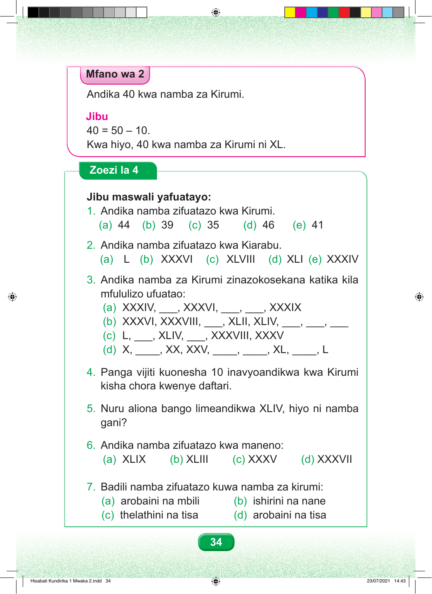

Mfano wa 2 Andika 40 kwa namba za Kirumi. Jibu 40 = 50 – 10. Kwa hiyo, 40 kwa namba za Kirumi ni XL. Zoezi la 4 Jibu maswali yafuatayo: 1. Andika namba zifuatazo kwa Kirumi. (a) 44 (b) 39 (c) 35 (d) 46 (e) 41 2. Andika namba zifuatazo kwa Kiarabu. (a) L (b) XXXVI (c) XLVIII (d) XLI (e) XXXIV 3. Andika namba za Kirumi zinazokosekana katika kila mfululizo ufuatao: (a) XXXIV, ___, XXXVI, ___, ___, XXXIX (b) XXXVI, XXXVIII, ___, XLII, XLIV, ___, ___, ___ (c) L, ___, XLIV, ___, XXXVIII, XXXV (d) X, ____, XX, XXV, ____, ____, XL, ____, L 4. Panga vijiti kuonesha 10 inavyoandikwa kwa Kirumi kisha chora kwenye daftari. 5. Nuru aliona bango limeandikwa XLIV, hiyo ni namba gani? 6. Andika namba zifuatazo kwa maneno: (a) XLIX (b) XLIII (c) XXXV (d) XXXVII 7. Badili namba zifuatazo kuwa namba za kirumi: (a) arobaini na mbili (b) ishirini na nane (c) thelathini na tisa (d) arobaini na tisa 34 Hisabati Kundirika 1 Mwaka 2.indd 34 23/07/2021 14:43